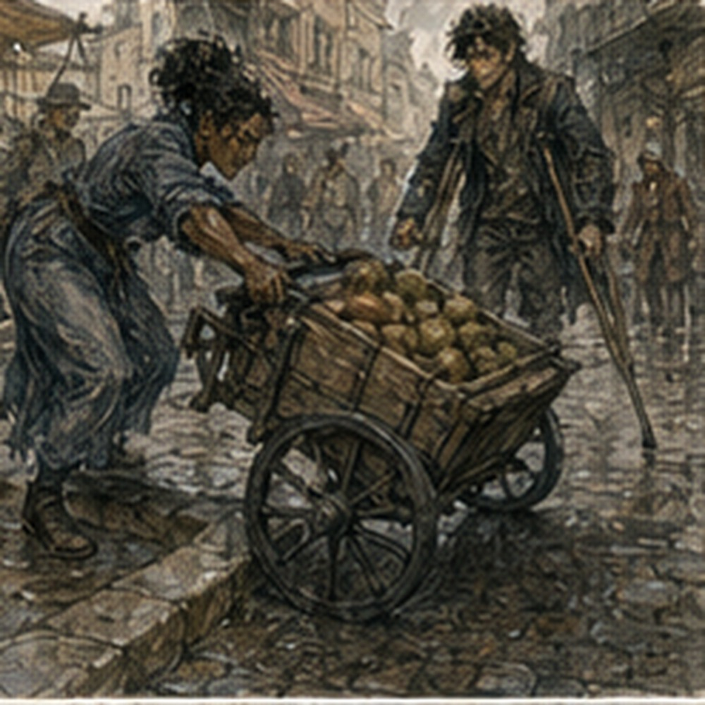

I wanted to see Lyssa. Again. This was less annoying than the first time. Not unannoying. Less. No magic today. Hessa had been explicit. No draw. No shaping. No direction. No sitting at a table pretending I was not practicing.
Fine. I ate breakfast. The keeper looked at me.
“Landlord.”
I stopped chewing.
“No.”
He smiled.
“How?”
“Bread man.”
“I hate him.”
“You buy bread from him.”
“That can change.”
“It won't.”
Probably true. I left. Lyssa was not at the cloth market. Not at the bakery building from before. Not at the narrow shop where the older man had argued about red cord.
At the fourth place, a woman sorting bundles on a low cart looked at me and said:
“You're late.”
“For what?”
She pointed across the square. Lyssa was standing beneath an awning arguing with a man over a wooden crate. Not angry. Professional. Different. I crossed. Lyssa saw me. Her mouth changed. Small. Good.
“Gregory.”
“Lyssa.”
The crate man looked between us.
“Your landlord?”
I closed my eyes. Lyssa laughed.
“No.”
“Messenger?”
“No.”
Lyssa laughed harder. I looked at her.
“You know?”
“Apparently.”
“This city is diseased.”
The crate man said:
“I heard you forgot the letter.”
“I did not forget a real letter.”
“That is worse.”
“No.”
Lyssa touched my arm. Not helping.
“You came to find me?”
“Yes.”
She looked pleased. Also busy. Good.
“I have this.”
She pointed at the crate.
“What is it?”
“Not yours.”
“Correct.”
The crate man said:
“Glass.”
Lyssa looked at him. He shrugged.
“Now it's his.”
“No.”
“Still not mine,” I said.
“Thank you.”
Lyssa checked a folded scrap. Then the crate. Then the scrap again.
“Six?”
“Six.”
“You said five.”
“I said six.”
“You said five yesterday.”
“I wrote six.”
“Where?”
He pointed to the side. A charcoal six. Lyssa stared.
“That was not there yesterday.”
“It was.”
“No.”
I looked at the six. Then at Lyssa. Then at the man. Not my problem. Wonderful.
Lyssa said:
“Fine. Six. Same price.”
He said:
“More glass.”
“Your mistake.”
“Your order.”
“Your six.”
“Your glass.”
They continued. I stood nearby. Not adjudicating. Eventually Lyssa paid something. The man looked unhappy. Lyssa looked satisfied. Probably both had won enough. She took one side of the crate. I looked at the other.
“No.”
“I didn't say anything.”
“You leaned.”
This was everywhere now.
“I can help.”
“You have two crutches.”
“Yes.”
“And a crate full of glass.”
“Yes.”
“No.”
“Fine.”
The crate man called a boy from inside. The boy took the other side. Lyssa and the boy carried it twenty feet to a handcart. I followed. Useful. Very. The crate went onto the cart.
Lyssa checked the wheels.
“Where are you taking it?”
“Two streets.”
“I can walk two streets.”
“I know.”
“Good.”
She took the cart handles. I walked beside her. The cart rattled. Glass clicked inside. I wanted to know how it was packed. Did not ask. Progress. Probably.
“You're actually landlord now?” Lyssa asked.
“No.”
“That's disappointing.”
“I read six lines.”
“How many people did you evict?”
“None.”
“Bad landlord.”
“I was too loud.”
“Better.”
“No.”

She grinned. We crossed a narrow street. A wagon waited. Lyssa pulled the cart over the curb edge. One wheel stuck. I moved around.
“Push?”
“No.”
“Why?”
“Because I have it.”
She rocked the cart once. Wheel cleared. Good. I kept walking. Two streets became three because the destination was around the back of a building. Lyssa stopped at a side door. Knocked. A woman opened it.
Looked at the crate.
“Six?”
Lyssa looked at me. I looked away.
The woman said:
“I ordered five.”
I laughed. Could not help it. Lyssa pointed at me.
“Don't.”
The crate man had been correct. Or Lyssa had been correct yesterday. Unclear. The woman checked her own paper. Five. Lyssa checked hers. Six.
“Why do you have six?”
“Because he had six.”
“That is not how orders work.”
“I know.”
The woman looked inside the crate.
“Keep six.”
Lyssa blinked.
“What?”
“I'll use it.”
“Same price?”
“No.”
Lyssa stared. The woman smiled. Negotiation began again. I sat on a low step because this was going to take time. Eventually the sixth piece stayed. More money changed hands. Lyssa came out.
“Everyone is difficult.”
“You are also everyone.”
“No.”
“Yes.”
“Incorrect.”
She returned the handcart. Not to the crate man. Different place. I did not ask. She came back without it. A man waiting beside the cart place caught her before she reached me.
“Lyssa.”
She stopped. He held out a narrow wrapped parcel.
“Can you take this south?”
“When?”
“Now.”
“How far?”
“Dyer's row.”
She looked at the sun.
“No.”
He blinked.
“You're going south.”
“Not there.”
“It's on the way.”
“No.”
“It is almost on the way.”
“How much?”
He named a number. Lyssa shook her head. He raised it. She shook her head again.
“Tomorrow?”
“Maybe.”
“I need today.”
“Then you need someone else.”
He looked at me. I immediately hated that.
“Can he carry it?”
“No,” Lyssa and I said together.
The man frowned.
“It is light.”
“That isn't the problem,” I said.
Lyssa looked at me. Not annoyed. Maybe pleased. The man tried again.
“Double.”
Lyssa considered. For one second I thought she would take it. Then she looked toward the south street.
“No.”
“Why?”
“Because I said yes to something else first.”
That was apparently the end. The man left with his parcel. I watched him go.
“You turned down double.”
“Yes.”
“You could have made it.”
“Maybe.”
“You had an hour.”
“I have less now.”
“You could move faster.”
Lyssa looked at my crutches. Then at me.
“That was not about you.”
“I know.”
“Do you?”
“Yes.”
She raised one eyebrow. Fine.
“I was calculating.”
“I know.”
“Your schedule.”
“Yes.”
“Not mine.”
“Exactly.”
That was annoying. Also fair.
“What was the first thing?”
“Work.”
“That is not detail.”
“You don't need detail.”
“I like detail.”
“I know.”
She started walking. I followed.
“Where are we going?”
“Leather stall.”
“Why?”
She held up one of the straps on her work bag. The stitching at the lower end had started to separate. I had not noticed.
“Repair.”
“You carry that every day?”
“Most.”
“How long has it been failing?”
“Today.”
“That did not happen today.”
“It became a problem today.”
Different standard. Fine. The leather stall was under a striped awning near a row of tool sellers. The man there took Lyssa's bag. Pulled the strap. Looked at the stitch.
“New strap.”
“Stitch.”
“New strap.”
“Stitch.”
“It will tear again.”
“Then stitch it again.”
He looked at her. She looked back. I stayed out of it. Mostly.
He said:
“Brown.”
Lyssa said:
“Black.”
“Brown matches.”
“Black is cheaper.”
He held up two strips. The brown did match. The black was ugly. Lyssa took black. I made a face. She saw.
“What?”
“Nothing.”
“You hate it.”
“It doesn't match.”
“It holds the bag.”
“Yes.”
“Then?”
I had been surrounded by theatre workers too long.
“Nothing.”
The leather man stitched the black strap reinforcement while we waited. Not replacing the whole strap. Compromise. Lyssa paid. She tested it by pulling hard. The leather man winced.
“Don't do that.”
“I need it to work.”
“It works.”
She pulled again. Still held.
“Good.”
We left. The black patch was visible from across the street. I hated it.
“What?” Lyssa asked.
“Nothing.”
“Still the strap?”
“Yes.”
She smiled.
“You're becoming decorative.”
“No.”
“Landlord.”
“Stop.”
“What now?” I asked.
“What are you doing?”
“Finding you.”
“You found me.”
“Yes.”
“So now what?”
I had not planned past that. Good.
“Food?”
“I have an hour.”
“Before?”
“Work.”
“Where?”
“South.”
“Can I come?”
She thought.
“No.”
Clean.
“Why?”
“Inside job. Stairs. Small room. Too many people already.”
“Fine.”
No apology. Better. She tilted her head.
“You okay with that?”
“Yes.”
“You made a face.”
“I have one face.”
“Apparently several people disagree.”
I hated everyone.
“Food.”
“Food.”
We bought meat pies from a stall near the fountain. Not the paper-bird square. Different fountain. Carrow had too many fountains. The pie seller knew Lyssa. Not well.
Enough to say:
“Late today.”
Lyssa said:
“Glass.”
The seller nodded as though that explained time. Apparently it did. He looked at me.
“Landlord?”
“No.”
Lyssa said:
“Yes.”
I looked at her. The seller handed me my pie.
“Rent's due.”
“I will burn this stall.”
“Then no pie.”
“Fine.”
I paid. Lyssa was still laughing when we reached the bench. We sat. Lyssa took the better side.
“That is mine.”
“You sat slowly.”
“I have crutches.”
“Excuses.”
I moved one crutch between my knees. The other leaned beside me. Not ideal. Stable enough. Lyssa bit into her pie.
“Did the magic do anything?”
I looked at her. She raised one eyebrow.
“You don't have to tell me.”
“It did something small.”
“Good?”
“Unclear.”
“That's your favorite.”
“It is not.”
“You say it a lot.”
“Hessa says it.”
“Then it's hers.”
“Fine.”
She waited. Did not ask again. Good. For almost a minute we ate without speaking. That should not have been notable. It was. Lyssa watched people crossing the square. A woman with three baskets.
A man carrying a chair upside down over one shoulder. Two children following a dog that clearly did not belong to them. I watched Lyssa. Not secretly enough. She looked over.
“What?”
“Nothing.”
“You are staring.”
“Yes.”
“Why?”
“I wanted to see you.”
That landed differently than I expected. Her expression softened. Not dramatic. Just less guarded.
“You found me.”
“Yes.”
“Again.”
“Yes.”
She looked back at the square. Then leaned her shoulder into mine once. Small. I liked it. I told her anyway.
“Thread is done.”
“Done?”
“For now.”
“Because?”
“It did not repeat cleanly.”
She nodded. No interpretation.
“Hessa tested direction instead.”
Lyssa chewed.
“What does that mean?”
“I was supposed to make a small change favor one side.”
“Did you?”
“Maybe.”
She pointed at me with the pie.
“Unclear.”
“Fuck you.”
She smiled.
Then:
“Are you allowed magic today?”
“No.”
“So don't.”
“I am not.”
“Good.”
That was the entire medical discussion. Excellent. She ate. A pigeon landed near our shoes. My phantom toes curled. Not actually. Sensation. Brief. Ordinary. I shifted my right foot instead. Lyssa noticed.
“What?”
“Nothing.”
“You moved.”
“Pigeon.”
She looked down.
“It is not touching you.”
“It was considering it.”
The pigeon walked closer. Lyssa tore off a piece of crust. I stopped her.
“Don't reward it.”
“Why?”
“It has done nothing.”
“It's a pigeon.”
“Exactly.”
She fed it. Traitor. The pigeon ate. Then another arrived.
“See?”
“Friends.”
“Consequences.”
She fed that one too. Soon there were five.
“This is how institutions fail.”
Lyssa laughed so hard she almost dropped the pie. Good. We stayed. No purpose. The hour became forty minutes. Then thirty. Lyssa checked the sun. I noticed.
“You need to go.”
“Soon.”
“Now?”
“Not yet.”
She leaned back. Her shoulder touched mine. Stayed. I liked that. No analysis. Almost.
“You're going theatre after Hessa tomorrow?” she asked.
“I don't know.”
“Landlord duties.”
“No.”
“Messenger?”
“No.”
“Person?”
I looked at her.
“How do you know that?”
She smiled.
“No.”
“Lyssa.”
“No.”
“That one happened yesterday.”
“Yes.”
“Who told you?”
“People.”
“Which people?”
“Current people.”
That was deliberate. I stared. She laughed.
“You're awful.”
“You told me about the road.”
“I told you the road changed.”
“Yes.”
“You are using that against me.”
“Yes.”
“Unfair.”
“You were very serious.”
“It mattered.”
“So does Person.”
“No.”
“Did you have a line?”
“No.”
“Then what did you do?”
“Stood.”
She waited.
“And?”
“Moved.”
She waited.
“Badly.”
There. She smiled.
“Did you like it?”
I looked at the fountain.
“Yes.”
“More than landlord?”
“Different.”
“Messenger?”
“I forgot the letter once.”
“I know.”
“Everyone knows.”
“Yes.”
“This is humiliating.”
“You keep going back.”
“Yes.”
“So maybe humiliation isn't fatal.”
“I have extensive evidence.”
She laughed.
“Do you want a real part?”
I opened my mouth. Stopped. That was not a question anyone at the theatre had asked me.
“I don't know.”
“Good.”
“Why good?”
“Because you don't have one.”
“That is not logic.”
“It means you don't need to decide yet.”
I looked at her. She took another bite. No lesson. Just pie. Good.
“You like me.”
“Yes.”
There. Easy. I looked at her. She looked back. No joke. Not heavy either. Just true.
“I do.”
She nodded.
“Good.”
I kissed her. Short. Then again. Longer. The bench was badly designed for kissing someone while holding two crutches and protecting a meat pie. I moved the pie first. Priorities. Lyssa laughed against my mouth.
“What?”
“You saved the food.”
“Yes.”
“Romantic.”
“It cost money.”
“More romantic.”
I kissed her again. Her hand rested behind my neck. Mine on her side. Nothing dramatic. Good. A pigeon jumped onto the bench. I felt it before I saw it. Movement. Lyssa broke the kiss.
The pigeon stole crust from her paper. I pointed.
“Consequences.”
She stared at the bird.
“That was mine.”
“Yes.”
“Fuck.”
I laughed. The bird left. We watched it go. Lyssa checked the sun again. Now. She stood. I stayed seated. Before she left, a girl about twelve came running across the square.
“Lyssa.”
Lyssa turned. The girl held up a small folded paper packet.
“My mother said tomorrow.”
Lyssa took it. Checked the mark.
“Morning?”
The girl nodded.
“Tell her before midday.”
“She said afternoon.”
“Before midday.”
The girl shrugged in the universal way of people carrying messages they did not own.
“Fine.”
She ran off. I looked at the packet. Lyssa tucked it into her bag. Black repair patch visible.
“What?”
“Nothing.”
“You want to know.”
“Yes.”
“Tomorrow work.”
“Where?”
“No.”
“Why?”
“Because then you'll start planning my route.”
“That happened once.”
“It happened today.”
“With the crate.”
“With everything.”
“That is exaggerated.”
She kissed my forehead. Patronizing. Effective.
“South?”
“South?”
“Yes.”
“Inside?”
“Yes.”
“Stairs?”
“Yes.”
“Too many people?”
“Yes.”
“Fine.”
She looked at me.
“What are you doing?”
“Probably walking.”
“Strong plan.”
“I have a notebook.”
“Dangerous.”
She leaned down and kissed me once more. Then straightened.
“Tomorrow?”
There it was. Again. I looked at her.
“I have Hessa morning.”
“I know.”
“After?”
“Maybe.”
She rolled her eyes.
“You keep saying maybe.”
“You keep asking tomorrow.”
“Yes.”
Fair. I thought.
“I could find you after.”
“If I'm not there?”
“Then you aren't.”
“Good.”
That felt like an answer. Not appointment. Not promise. Just possible. Lyssa started south. I watched her go for maybe two seconds. Then stopped because staring became weird quickly. She turned anyway. Caught me.
“Landlord.”
“Fuck you.”
She walked away laughing. I sat another minute. My palms were warm but fine. Right calf ordinary. Residual limb quiet. Phantom foot present, heel against nothing. No magic. Good. I stood. The day was not finished.
I could go theatre. Guild. Home. Nothing. I chose nothing for a while. Walked without deciding. At one corner I passed the paper-bird seller. He recognized me. Held up a yellow bird. I looked at it.
The one on my table was yellow too.
“Not today,” I said.
He shrugged. No offense. Good. I kept walking. The thread did not enter my head. Not for several blocks. When it did, it was not first. Lyssa was. Annoyingly simple. Again.